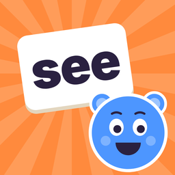

Privacy policy
Sight Word Friends · Effective October 13, 2026
The short version: Sight Word Friends collects no personal information. There are no accounts, no ads, no analytics and no tracking. Everything you and your child make in the app stays on your device.
Who we are
Sight Word Friends is a sight word practice app for children, made by an independent developer. In this policy, "we" means the developer, and "you" means the parent, guardian or teacher using the app with a child.
Information we collect
None. The app has no sign-up, no servers of its own, and no advertising, analytics or third-party tracking code. We never receive information about you, your child or how the app is used.
What stays on your device
Child profiles (a first name and a chosen character), word lists, game results and progress, voice recordings made by a grown-up, and settings are stored only on the device. We never receive a copy. Deleting the app deletes this information. Apple may include it in your device backups, under Apple's own privacy terms.
Microphone
The microphone is used in two optional ways, and only after you allow it:
- Recording your voice. When a grown-up chooses to record a word, the recording is saved in the app on the device so your child can hear it. It is never uploaded. You can delete recordings in the app.
- Listen for my child (off by default). If you turn this on, Flash Cards listens for your child reading a word, using Apple's speech recognition on the device only. The audio is not recorded, not saved and not sent to us, to Apple or to anyone else. On devices that can't recognize speech without the internet, this feature isn't available.
You can turn off microphone and speech recognition access at any time in the device's Settings → Privacy & Security.
Camera and photos
If you take or choose a photo of a word list, the words are read on the device using Apple's text recognition. The photo is not saved by the app or sent anywhere. Only the words you choose to add are kept.
Purchases
The Full Version is a one-time purchase handled entirely by Apple. We never see your payment or account details. Apple only tells the app whether the Full Version has been bought.
Children's privacy
Sight Word Friends is designed for children and follows Apple's rules for the Kids category. Because we collect no personal information from anyone, we collect none from children. Settings, purchases and any links that leave the app are behind a grown-ups-only check.
Changes to this policy
If the way the app handles information ever changes, we will update this page and its date before the change takes effect. We will not begin collecting personal information from children.
Contact
Questions about privacy? Email sightwordfriends.help@gmail.com.